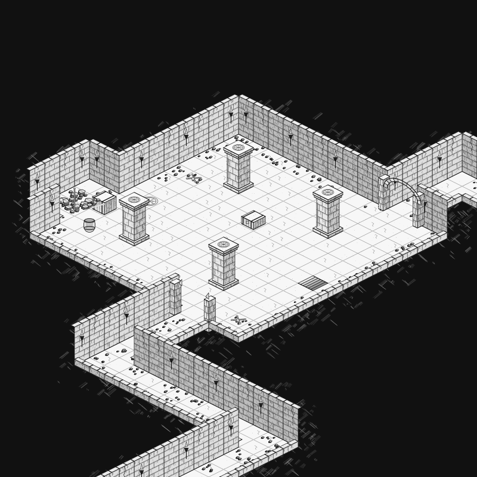
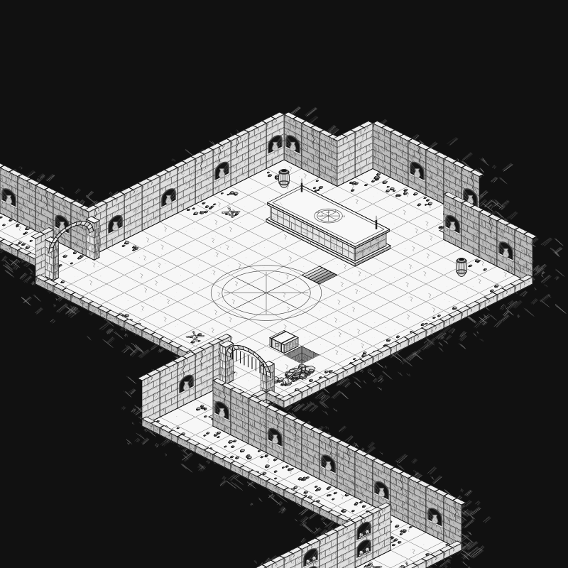
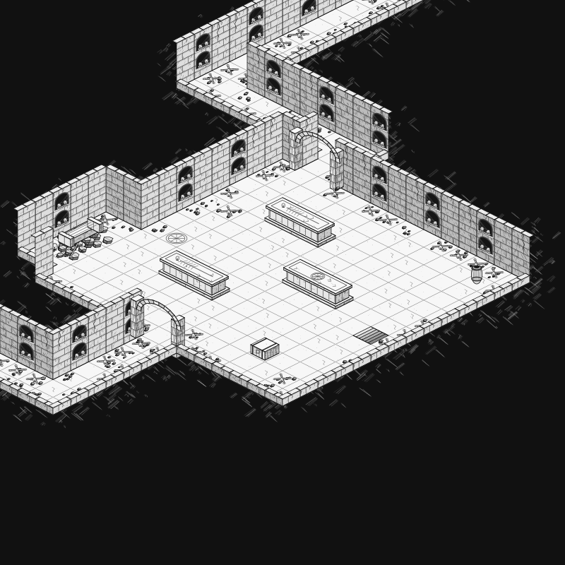

Four ink-and-scratchboard panels: carved tombs, bone niches, loose rubble, urns, crates, barrels, engraved stone, and varied open doorways. Built on exact ½ × ¼ inch diamonds.
8 × 8 inches per board · TOP ↑ · ±26.565° grid lines · one connected dungeon level.
Download workshop draft · Full assembled image · Passage coordinates · Notes
Print at 100% / Actual Size. Reviewed sample metadata; custom panel gameplay is still in development.


